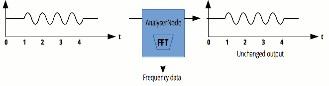

The AnalyserNode interface represents a node able to provide real-time frequency and time-domain analysis information. It is an AudioNode that passes the audio stream unchanged from the input to the output, but allows you to take the generated data, process it, and create audio visualizations.
An AnalyzerNode has exactly one input and one output. The node works even if the output is not connected.

- Number of inputs
1 - Number of outputs
1(but may be left unconnected) - Channel count mode
"explicit" - Channel count
1 - Channel interpretation
"speakers"
Inheritance
This interface inherits from the following parent interfaces:
<div id="interfaceDiagram" style="display: inline-block; position: relative; width: 100%; padding-bottom: 11.666666666666666%; vertical-align: middle; overflow: hidden;"><svg style="display: inline-block; position: absolute; top: 0; left: 0;" viewbox="-50 0 600 70" preserveAspectRatio="xMinYMin meet"><a xlink:href="https://developer.mozilla.org/en-US/docs/Web/API/EventTarget" target="_top"><rect x="1" y="1" width="110" height="50" fill="#fff" stroke="#D4DDE4" stroke-width="2px" /><text x="56" y="30" font-size="12px" font-family="Consolas,Monaco,Andale Mono,monospace" fill="#4D4E53" text-anchor="middle" alignment-baseline="middle">EventTarget</text></a><polyline points="111,25 121,20 121,30 111,25" stroke="#D4DDE4" fill="none"/><line x1="121" y1="25" x2="151" y2="25" stroke="#D4DDE4"/><a xlink:href="https://developer.mozilla.org/en-US/docs/Web/API/AudioNode" target="_top"><rect x="151" y="1" width="90" height="50" fill="#fff" stroke="#D4DDE4" stroke-width="2px" /><text x="196" y="30" font-size="12px" font-family="Consolas,Monaco,Andale Mono,monospace" fill="#4D4E53" text-anchor="middle" alignment-baseline="middle">AudioNode</text></a><polyline points="241,25 251,20 251,30 241,25" stroke="#D4DDE4" fill="none"/><line x1="251" y1="25" x2="281" y2="25" stroke="#D4DDE4"/><a xlink:href="https://developer.mozilla.org/en-US/docs/Web/API/AnalyserNode" target="_top"><rect x="281" y="1" width="120" height="50" fill="#F4F7F8" stroke="#D4DDE4" stroke-width="2px" /><text x="341" y="30" font-size="12px" font-family="Consolas,Monaco,Andale Mono,monospace" fill="#4D4E53" text-anchor="middle" alignment-baseline="middle">AnalyserNode</text></a></svg></div>
a:hover text { fill: #0095DD; pointer-events: all;}
Properties
Inherits properties from its parent, AudioNode.
AnalyserNode.fftSize- Is an unsigned long value representing the size of the FFT (Fast Fourier Transform) to be used to determine the frequency domain.
AnalyserNode.frequencyBinCountRead only- Is an unsigned long value half that of the FFT size. This generally equates to the number of data values you will have to play with for the visualization.
AnalyserNode.minDecibels- Is a double value representing the minimum power value in the scaling range for the FFT analysis data, for conversion to unsigned byte values — basically, this specifies the minimum value for the range of results when using
getByteFrequencyData(). AnalyserNode.maxDecibels- Is a double value representing the maximum power value in the scaling range for the FFT analysis data, for conversion to unsigned byte values — basically, this specifies the maximum value for the range of results when using
getByteFrequencyData(). AnalyserNode.smoothingTimeConstant- Is a double value representing the averaging constant with the last analysis frame — basically, it makes the transition between values over time smoother.
Methods
Inherits methods from its parent, AudioNode.
AnalyserNode.getFloatFrequencyData()- Copies the current frequency data into a
Float32Arrayarray passed into it.
AnalyserNode.getByteFrequencyData()- Copies the current frequency data into a
Uint8Array(unsigned byte array) passed into it.
AnalyserNode.getFloatTimeDomainData()- Copies the current waveform, or time-domain, data into a
Float32Arrayarray passed into it. AnalyserNode.getByteTimeDomainData()- Copies the current waveform, or time-domain, data into a
Uint8Array(unsigned byte array) passed into it.
Examples
Note: See the guide Visualizations with Web Audio API for more information on creating audio visualizations.
Basic usage
The following example shows basic usage of an AudioContext to create an AnalyserNode, then requestAnimationFrame and <canvas> to collect time domain data repeatedly and draw an "oscilloscope style" output of the current audio input. For more complete applied examples/information, check out our Voice-change-O-matic demo (see app.js lines 128–205 for relevant code).
var audioCtx = new (window.AudioContext || window.webkitAudioContext)();
var analyser = audioCtx.createAnalyser();
...
analyser.fftSize = 2048;
var bufferLength = analyser.frequencyBinCount;
var dataArray = new Uint8Array(bufferLength);
analyser.getByteTimeDomainData(dataArray);
// draw an oscilloscope of the current audio source
function draw() {
drawVisual = requestAnimationFrame(draw);
analyser.getByteTimeDomainData(dataArray);
canvasCtx.fillStyle = 'rgb(200, 200, 200)';
canvasCtx.fillRect(0, 0, WIDTH, HEIGHT);
canvasCtx.lineWidth = 2;
canvasCtx.strokeStyle = 'rgb(0, 0, 0)';
canvasCtx.beginPath();
var sliceWidth = WIDTH * 1.0 / bufferLength;
var x = 0;
for(var i = 0; i < bufferLength; i++) {
var v = dataArray[i] / 128.0;
var y = v * HEIGHT/2;
if(i === 0) {
canvasCtx.moveTo(x, y);
} else {
canvasCtx.lineTo(x, y);
}
x += sliceWidth;
}
canvasCtx.lineTo(canvas.width, canvas.height/2);
canvasCtx.stroke();
};
draw();
Specifications
| Specification | Status | Comment |
|---|---|---|
| Web Audio API The definition of 'AnalyserNode' in that specification. |
Working Draft |
Browser compatibility
| Feature | Chrome | Firefox (Gecko) | Internet Explorer | Opera | Safari (WebKit) |
|---|---|---|---|---|---|
| Basic support | 10.0webkit | 25.0 (25.0) | Not supported | 15.0 webkit 22 |
6.0webkit |
| Feature | Android | Firefox Mobile (Gecko) | Firefox OS | IE Mobile | Opera Mobile | Safari Mobile | Chrome for Android |
|---|---|---|---|---|---|---|---|
| Basic support | ? | 26.0 | 1.2 | ? | ? | ? | 33.0 |